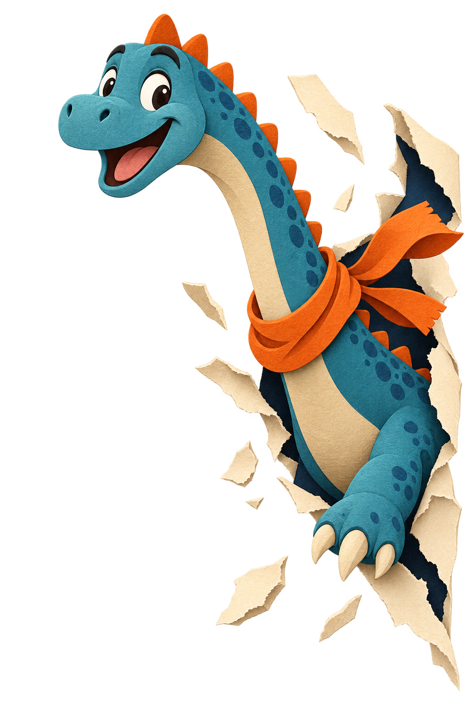

Jeanne.
Basée à Lyon · Disponible ailleurs
J’imagine des idées claires, des histoires qui restent et des projets qui donnent envie de faire un pas de côté. Bonjour, moi c’est Jeanne.

attention,il est curieux ✦
Je crois aux idées
qui rapprochent.
Le jour, je transforme des sujets complexes en histoires simples. Le soir, je cherche le meilleur flan de la ville.
Après quelques détours par l’édition, la communication et les projets culturels, j’ai compris que mon fil rouge tenait en trois verbes : écouter, relier, raconter. J’aime les équipes généreuses, les idées encore un peu fragiles et les projets qui ont quelque chose d’utile à dire.
Quand je ne travaille pas, on me trouve souvent dans un train, un carnet sur les genoux, ou autour d’une grande table à refaire le monde avec mes amis.
Ce qui me
met en mouvement.
Un petit inventaire, forcément incomplet, des choses qui occupent ma tête et mes journées.
Les mots
Ceux qu’on souligne, qu’on partage, et ceux qu’on n’avait encore jamais osé dire.
Les rencontres
Une bonne conversation peut changer une journée. Parfois même un peu plus.
Les chemins de traverse
Sortir du cadre, aller voir ailleurs, revenir avec un regard tout neuf.
On se raconte
la suite ?
Une idée, un projet, une recommandation de flan ?
Ma boîte mail est grande ouverte.